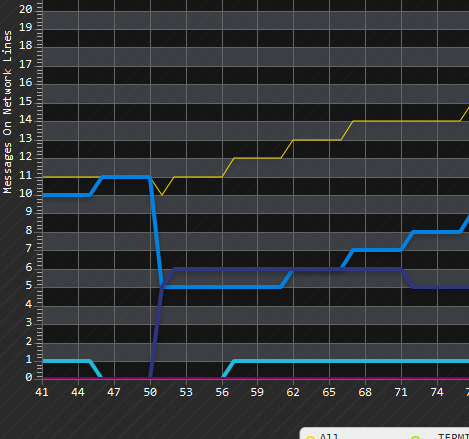

Network graph visualization will show you how busy is the network itself during the execution of the algorithm, the visualization will show for each message that the algorithm send how much instances of it exists on the network on a given time